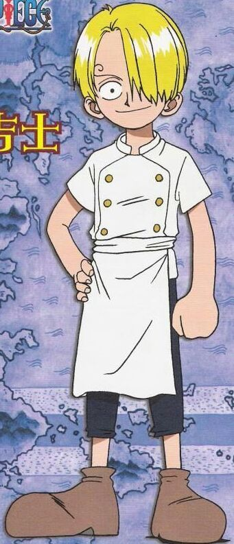

🔹 Fase 1 — Infancia y Orígenes / Antes de ser Sombrero de Paja
- Sanji nació como miembro de la familia Germa 66, una familia con trasfondo de soldados/genética modificada. Pero Sanji resultó diferente: él no obtuvo poderes, y fue maltratado y aislado por ser considerado un “fracaso”.
- Finalmente escapa y termina trabajando como cocinero aprendiz en un barco, lo que marca su separación de su familia de sangre.
- Tras un naufragio junto a un pirate-chef llamado Zeff, Sanji adopta su filosofía: cocinar y nunca negar comida a quien lo necesita, y aprende a pelear solo con sus piernas para proteger sus manos (útiles para cocinar).